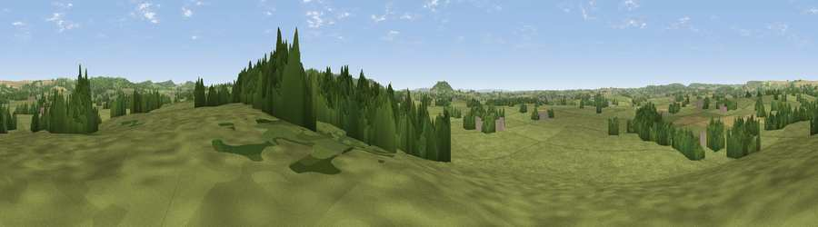

Viewpoint near Sedgehill
#33920 in England · top 70% of its area beats it · near SedgehillThe view, rendered

A 360° render of this exact spot computed from the terrain model, tree cover and land cover — summer colours, afternoon light, calibrated against photographs of famous viewpoints. Real trees, hedges and buildings will differ in detail.
The panorama
Grey silhouette: terrain skyline in each direction (720 bearings, Earth curvature and refraction included). Dashed green: skyline with trees (+15 m) and buildings (+8 m) as obstacles. Blue strip: how far the ground is visible on each bearing.
Where the view opens
Wedge length = distance to the farthest visible ground on that bearing (vegetation-aware). Rings at 10, 25 and 50 km.
What fills the view
78% grassland · 17% woodland · 5% cropland · 1% built-up
Angular shares of the visible panorama (visual magnitude), not map area. Landscape diversity 0.30 (0–1 Shannon).
Key numbers
More beautiful places nearby
The staircase of upgrades: each row has a higher view potential than everything closer. Driving times are estimates from straight-line distance, calibrated against real road routing — check an actual route before setting out.
| Place | Direction | Drive | Score |
|---|---|---|---|
| Viewpoint near Motcombe | SE · 4 km | ~9 min | 66.7 |
| Little Hill | SE · 4 km | ~9 min | 70.0 |
| Melbury Hill | SSE · 9 km | ~18 min | 72.5 |
| Long Knoll | NNW · 11 km | ~21 min | 74.6 |
| Viewpoint near Berwick St John | SE · 11 km | ~21 min | 78.2 |
| Viewpoint near Nettlecombe | SW · 45 km | ~65 min | 79.3 |
| Eggardon Hill | SW · 45 km | ~65 min | 80.3 |
| Viewpoint near Askerswell | SW · 45 km | ~65 min | 81.7 |
51.05270, -2.22715 · source: screening · position refined by local search. Computed location — check access rights before visiting.